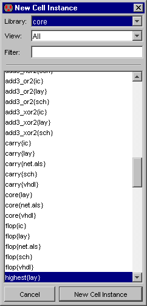

To place an instance of a cell in another cell,
use the "Cell" button in the component menu.
After choosing a cell from the popup list, click in the edit window to place the instance.
|  |
Another way to place an instance of a cell is to use the Place Cell Instance... command (in menu Cell).
You will be shown a list of cells that are available for creation.
After selecting one, click to create an instance in the current cell.
The cell selection dialog has three controls at the top for viewing cells.
The "Library" popup lets you choose which library to examine.
You can choose "ALL" to see cells from all libraries.
The "View" popup lets you see only those cells in the specified view.
Again, you can choose "All" to see all views.
The "Filter" field contains a regular expression that must match a cell name in order to list it.
For an explanation of the "Evaluate Numbers when Sorting Names" checkbox,
see Section 3-7-1.
|
If you place an instance from a different library, that library will be linked to the current one.
Linked libraries are read from disk together, and form a single hierarchy that spans multiple files.
See Section 3-9-1 for
more on libraries.
An alternate way to create a cell instance is to duplicate an existing one on the screen.
This requires that an instance of that particular cell already exist.
Select the existing cell and use the Duplicate command (in menu Edit).
Then move the cursor to the intended location of the new instance and click to create the copy.
Note that this command copies all attributes of the original node including its orientation.
When a cell instance is being created,
the cursor points to its anchor point.
The anchor point is that point inside of the cell where the coordinate space has its origin.
This is often defined by the location of a cell-center node inside of the cell
(see Section 7-6-3).
|  |
Most cells have a cell-center node placed automatically in them.
If there isn't one and you want it, click on the "Misc" button in the component menu on the left,
and choose "Cell Center".
A cell-center node, placed inside of the cell definition, affects the anchor point for all subsequent
creation of instances of the cell.
The cell-center is always at the origin of the cell.
If you move it, then the origin moves
(in other words, moving the cell center is really like moving everything else in the cell).
Note that the cell center is "hard to select" and can only be moved in "special select" mode
(see Section 2-1-5).
You can move the cell center to the center of the selected objects by using the
Cell Center to Center of Selection command (from menu Edit / Move).
Schematic Instances
When drawing schematics, you place instances of the icon cell, not the schematics cell.
An icon cell can be automatically created with the Make Icon View command
(in menu View, see Section 3-11-4).
The icon cell can then be edited to have any appearance
(see Section 7-6-1).